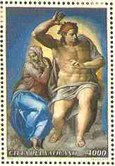
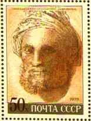
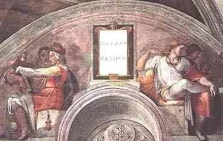
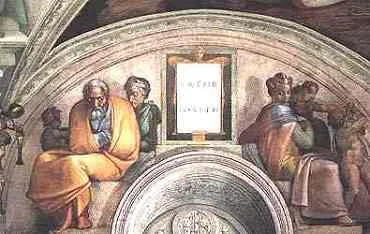
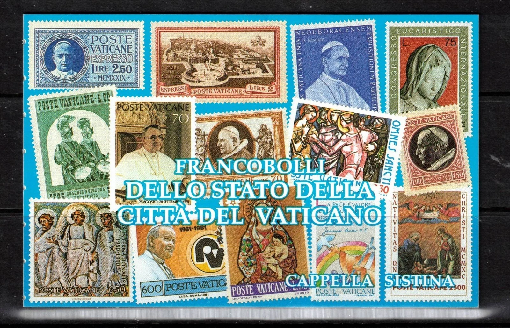
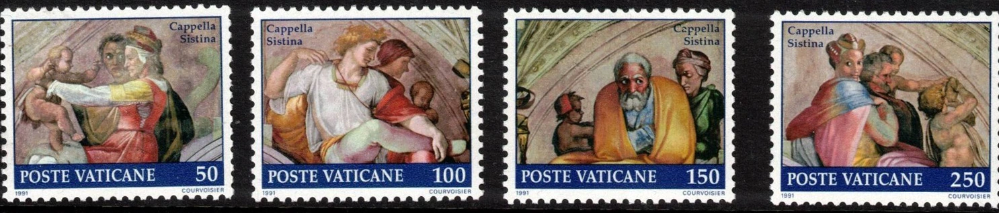
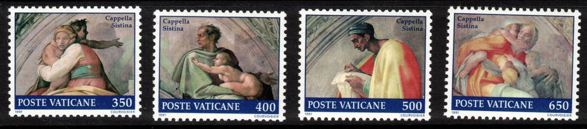
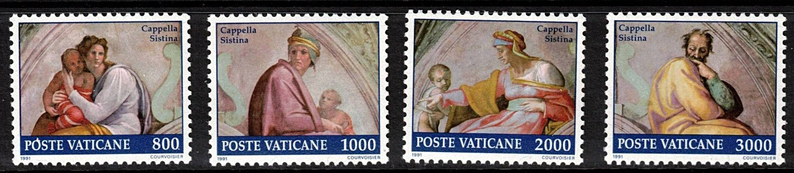

Home / Art Gallery / The Sixtine Chapel by Michelangelo Buonarotti
The Sixtine Chapel by Michelangelo Buonarotti
From the original Art on Stamps archive

Michelangelo Buonarotti (1475-1564). Italian Renaissance sculptor, painter, architect, and poet who exerted an unparalleled influence on the development of Western art. The Sixtine Chapel in Vatican is his story of Creation.

Lunette of Eleasar: part of the cycle on the genealogy of Christ according to St. Matthew. It is the first of the frescoes painted by Michelangelo during the period 1508-1510 and the first one that was cleaned.


Lunette of Jacob: chronologically the last two or Christ's forefathers. The frowning old man on the left is Jacob, father of Joseph who was Christ's putative father.
The Ancestors of Christ: Michelangelo’s Sistine Chapel Lunettes
While the famous central panels of the Sistine Chapel ceiling tell the story of Creation and humanity’s earliest history, the lunettes along the upper walls offer a quieter and more intimate vision. Painted around the windows, these curved architectural spaces contain figures associated with the genealogy of Jesus in the Gospel of Matthew. Michelangelo transformed a long list of names into scenes of human life: adults in contemplation, parents holding children, and families sharing moments of fatigue, uncertainty and tenderness.
The lunettes belong to the great ceiling campaign of 1508–1512, commissioned by Pope Julius II. Michelangelo painted in fresco on wet plaster, working from scaffolding high above the chapel floor. The lunettes, situated at the edges of the immense decoration, are especially striking because their figures seem so close to ordinary human experience. They are not straightforward narrative portraits of every named ancestor; the inscriptions and the groups of figures together evoke the generations leading to Christ.

First group: family and contemplation

Michelangelo’s arrangement alternates solitary, inward-looking figures with small family groups. Their poses, gestures and clothing create a rich visual rhythm around the windows. Seen close up, these figures reveal the painter’s gift for expressing emotion through the weight and movement of the human body.
Second group: the generations of Christ

Among the named lunettes are those of Eleazar and Matthan, Jacob and Joseph, and Asa, Jehoshaphat and Joram. The original paintings are identified by their inscriptions, but a tiny stamp reproduction does not always allow every figure to be identified with certainty. The captions below therefore identify the Vatican issue and denomination without assigning an unverified scene to an individual stamp.
Third group: the restored frescoes on stamps

Issued by Vatican City in 1991, this set of twelve stamps reproduces details from the lunettes. Presented here as individual stamps rather than one small composite image, they invite the viewer to compare Michelangelo’s faces, colours and gestures. The series also records a chapter in the modern appreciation and conservation of the Sistine Chapel frescoes.
Catalogue numbers (Scott or Michel) have not been added because they have not been independently verified for each denomination.